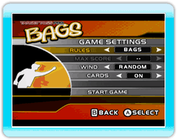
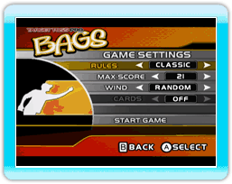

5 |
Introducción |
 |
En inglés se le conoce como "bags" o "cornhole". Se originó en el Medio Oeste de los EE. UU. en los años sesenta y, desde entonces, se ha vuelto infaltable en los eventos sociales al aire libre de costa a costa. El tragabolas es un juego asombrosamente simple, pero aún así extremadamente competitivo, en el que los jugadores arrojan saquitos de frijoles para tratar de hacerlos caer dentro de un agujero sobre una plataforma ligeramente inclinada o "caja" con el fin de hacer puntos de manera similar al lanzamiento de herraduras. Ya sea que se trate de una merienda campestre o de una barbacoa veraniega, el juego se ha convertido en punto focal de la vida social. El inconfundible sonido de los saquitos al golpear la caja ahora hace parte de la banda sonora universal de las fiestas.  "Target Toss Pro: Bags" es una fresca revisión del clásico juego en el que se presenta una nueva estrategia de puntuación que premia a los jugadores por realizar un tiro dentro del agujero sin tocar la caja (que llamaremos "directo") en vez del acostumbrado "tiro al agujero". Los jugadores ganan cinco puntos por cada tiro "directo", 3 puntos por cada tiro que golpea la caja antes de caer dentro del agujero y 1 punto por cada bolsa que caiga sobre la caja. Cada jugador tendrá derecho a 4 lanzamientos por ronda y cada juego consta de 6 rondas. El ganador es el que consiga más puntos al final.  La puntuación en el juego de tragabolas clásico supone dos jugadores o dos equipos enfrentados uno contra el otro. Los jugadores reciben 3 puntos por cada saquito en el agujero y 1 punto por cada saquito que caiga sobre la caja. Sin embargo, los puntos serán contabilizados al final de cada ronda de manera que solamente uno de los jugadores recibirá puntos, según su desempeño en esa ronda. Por ejemplo, si el jugador 1 tiene 6 puntos en una ronda y el jugador 2 tiene 9 puntos, la única persona que recibirá puntos en esa ronda será el jugador 2, que recibirá 3 puntos (sus 9 puntos menos los 6 puntos del otro jugador). Si en una hubiera un empate, ninguno de los jugadores recibirá puntos. El juego será por tantos turnos como sean necesarios para que uno de los jugadores reciba 21 puntos (o alguna otra puntuación máxima predeterminada). |
 "Target Toss Pro: Bags" es un juego de video basado en el tragabolas, el juego de moda en las fiestas de patio trasero y meriendas campestres en todo el país.
"Target Toss Pro: Bags" es un juego de video basado en el tragabolas, el juego de moda en las fiestas de patio trasero y meriendas campestres en todo el país.
 |
 |
 |